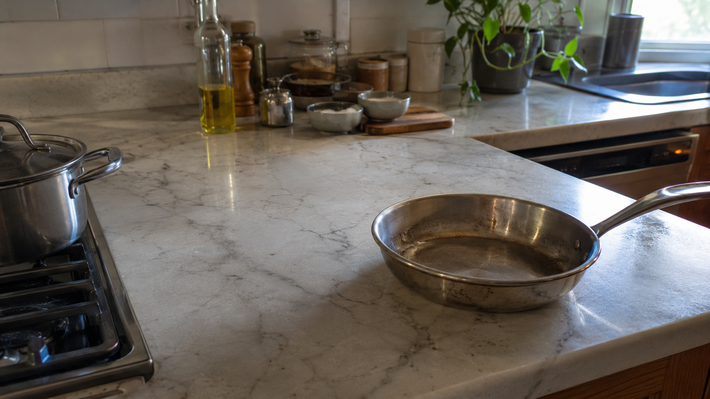

← BACK TO DOSSIERS LIST
CALIBRATION CASE FILE // TREND: HOW AI GENERATORS MAKE EVERYTHING LOOK TOO PERFECT
Forensic Realism Calibration for Kitchen Imagery: Rebuilding Authentic Surface Behavior Beyond AI Gloss
DATE: 2026-07-13
STATUS: EVIDENCE_DETECTION
ENGINE: CHATGPT DALL-E 3

SPECIMEN IMAGE #16:9 - CLEAN OPTICS
Many AI-generated kitchen images default to the same visual formula: spotless countertops, flawless cookware, and perfectly controlled lighting. While these outputs may appear impressive at first glance, they often fail under forensic inspection because real domestic spaces accumulate subtle evidence of use. Authentic realism emerges not from more detail, but from believable detail distribution, material fatigue, uneven cleanliness, and the physical consequences of everyday interaction.
In this calibration breakdown, we examine the scene through five layers of reality: Subject, Environment, Physics, Time, and Camera. Each layer contributes a different form of observational credibility. Yet the most important transformation happens before image generation even begins. The true secret to camera-grade simulation is not hidden in rendering parameters, but in language-level substitutions that quietly reshape how the model interprets reality. Those shifts become visible in the calibration console represented by the lexicon changes at the end of this dossier.
The lexicon shift process replaces synthetic visual shortcuts with physically observable behaviors. Terms such as "impossibly clean" are converted into descriptions of maintenance patterns, wear accumulation, and environmental interaction. Likewise, "flawless metal pans" become cookware surfaces exhibiting fingerprints, abrasion, and heat exposure. Calibration quality improves when prompts describe measurable material behavior rather than idealized aesthetics. Across the five-layer framework, realism increases as the language moves from perfection-oriented abstractions toward observable physical evidence.
This brings us back to the original problem: repetitive AI aesthetics are often a vocabulary problem disguised as a rendering problem. By learning how to identify and replace synthetic visual language, creators can produce imagery that feels significantly more believable and observational. For a deeper system covering realism calibration, environmental entropy, sensor behavior, and forensic prompt construction, explore ALPHA REALISM. The complete methodology, advanced calibration workflows, and realism scoring framework are available through ALPHA REALISM.
The 5 Layers of Reality Applied
Subject:
A domestic kitchen centered on a marble countertop showing subtle mineral variation, faint wipe marks, scattered micro-scratches, minor water rings near a sink area, and metal pans with fingerprints, heat discoloration, light abrasion, and uneven reflectivity from regular use.
Environment:
Natural daylight entering through a nearby window mixes with warm interior lighting, producing uneven illumination, soft shadow falloff, localized highlight clipping on reflective surfaces, subtle bounce light from cabinets, and darker corners with reduced tonal separation.
Physics:
Reflections distort slightly across brushed metal and polished stone, gravity influences the placement of utensils and fabric towels, airborne dust softens some highlights, and small moisture traces alter local reflectivity near food preparation zones.
Time:
Evidence of routine use appears through minor edge wear, faint dust accumulation in corners, subtle staining around frequently touched areas, slight patina on cookware, and aging visible in grout lines and material surfaces.
Camera:
Handheld full-frame camera simulation, 35mm lens equivalent, slight edge softness, realistic depth transition, mild sensor grain in darker regions, imperfect dynamic range, restrained sharpening, subtle compression artifacts, and physically plausible highlight rolloff.
The Lexicon Shift Table
| Appearance (Dead Adjective) |
|
Living Event (Cause & Effect) |
| impossibly clean marble countertop |
➔ |
marble countertop showing faint wipe marks, mineral variation, and subtle signs of daily use |
| flawless metal pans |
➔ |
metal pans with fingerprints, light abrasion, and uneven reflective wear |
| luxury kitchen |
➔ |
functional domestic kitchen shaped by regular household activity |
| cinematic lighting |
➔ |
mixed window daylight and practical interior lighting with uneven exposure |
| ultra sharp details |
➔ |
localized sharpness with natural optical falloff and sensor limitations |
| perfect reflections |
➔ |
slightly distorted reflections influenced by surface wear and viewing angle |
Calibration Prompt Console
SUBJECT: domestic kitchen with a marble countertop displaying faint wipe marks, subtle mineral veining, light scratches, occasional water rings, and metal pans carrying fingerprints, heat discoloration, micro-abrasions, and uneven reflective response from repeated use. ENVIRONMENT: ordinary lived-in kitchen, practical object placement, mild countertop clutter, daylight entering from a side window mixed with warm indoor fixtures, uneven illumination, soft shadow accumulation in corners, realistic highlight clipping. PHYSICS: physically accurate reflections across stone and metal, gravity-driven object placement, airborne dust affecting microcontrast, slight moisture traces altering local surface reflectivity, natural bounce light from cabinets and walls. TIME: signs of regular maintenance rather than perfection, faint dust in neglected areas, subtle aging in grout lines, worn cookware surfaces, accumulated micro-wear on frequently touched zones. CAMERA: handheld full-frame capture, 35mm lens equivalent, observational photography, slight edge softness, realistic depth transition, mild sensor grain, restrained sharpening, imperfect dynamic range, natural highlight rolloff, authentic optical behavior, documentary realism, anti-CGI surface response --ar 16:9
Do you want to generate precise AI images?
Unlock our alpha realism blueprint, physical reliable framework to get the best of your creations with the ALPHA REALISM Guide.
Download Ebook Now